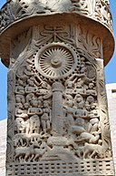
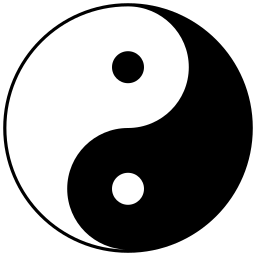
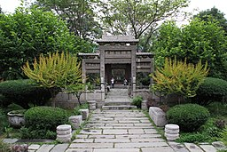
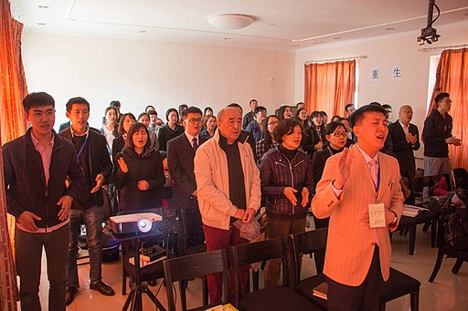

Despite the differences and occasional contradictions between these religions, the ancient Chinese society held each of these philosophies in high importance and incorporated the different teachings into multiple areas of life.

Buddhism
Chinese Buddhism or Han Buddhism is a Chinese form of Mahayana Buddhism which has shaped Chinese culture in a wide variety of areas including art, politics, literature, philosophy, medicine and material culture. It is a cultural system of beliefs and practices based on principles of compassion and non-attachment.
Catholicism
As far as day-to-day practice, Catholicism in China is a lot like anywhere else. Chinese Catholics hold masses in cathedrals and share the same rituals and beliefs and prayers. One difference is that services in China tend to be more old-fashioned. Priests are more likely to face away from the congregation and lead traditional hymns. Until 20 years ago, most masses were still conducted in Latin.

Daoism
Daoism stands alongside Confucianism as one of the two great religious/philosophical systems of China. The Taoist focus on natural elements and observing how the natural world works helped to create Chinese medicine. Taoists believe in spiritual immortality, where the spirit of the body joins the universe after death.

Islam
Islam was transmitted to China during the Tang and Song dynasties via the overland and maritime Silk Roads. Followers of Islam aim to live a life of complete submission to Allah (God). They believe that nothing can happen without Allah's permission, but humans have free will.

Protestantism
Protestant Christianity entered China in the early 19th century, taking root in a significant way during the Qing dynasty. Protestantism emphasizes that humans are justified before God by grace through faith separated the first Protestant reformers from the Roman Catholicism of their day. And despite the subtle differences that arose in the various Protestant church bodies, devotion to this teaching has been central to Protestantism throughout its history.